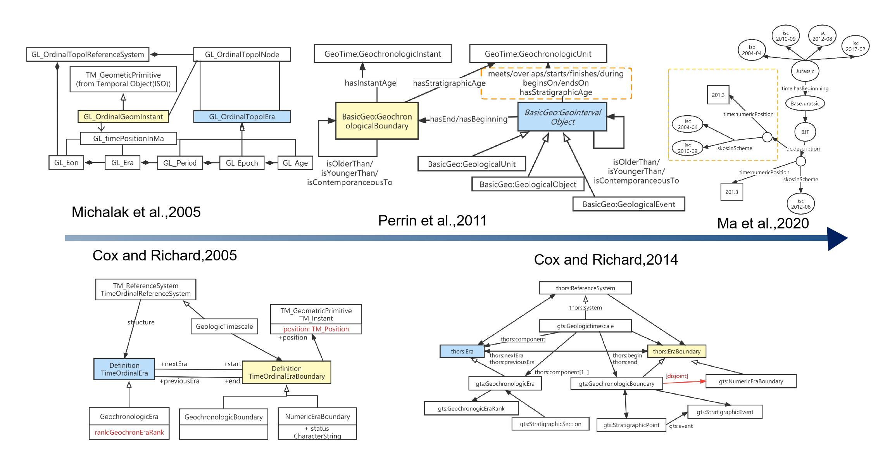
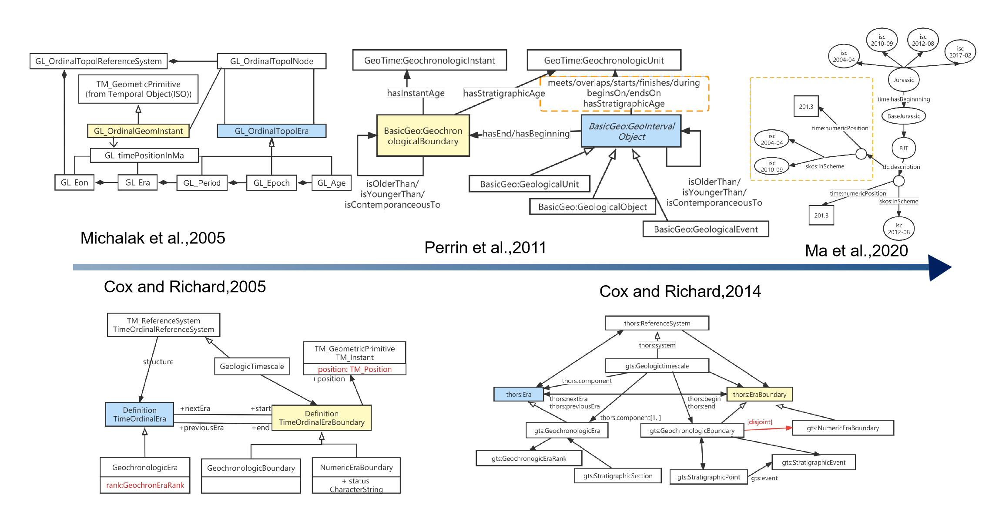

Welcome to Geologic Time Scale Knowledge Graph (GTSKG) Hub
This platform is dedicated to sharing different versions of structured data, visualizations and related datasets from the first published geological year representative to the present. Main contents include:
- Visual representation of part of the GTSKG
- Comparison of multiple versions of GTS
- Data sources and references


 
